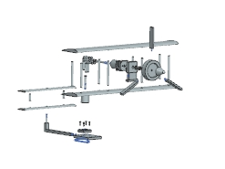
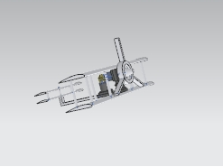

04 / MECHANISMS / ASSEMBLY DESIGN
Air engine powered flyer
An air-engine mechanism integrated into a flyer-inspired mechanical assembly.
The objective
Combine an air-engine mechanism with a flyer-inspired arrangement of wings, structural supports, and a propeller.
The approach
The CAD set brings together piston, cylinder, valve, shaft, flywheel, and bearing-support parts with the main wing, secondary wing, frame, nose cone, and propeller. Assembled and exploded configurations document how these parts relate.
The outcome
The assembled model and exploded configuration communicate the integration of the engine and surrounding flyer geometry. The component library preserves separate parts for inspecting and developing the mechanism.
Scope & interpretation
Images are original low-resolution previews embedded in the CAD assembly files. The supplied material documents a CAD concept; flight capability and pneumatic operation have not been demonstrated here. Individual team responsibilities are not documented in the available project files.

